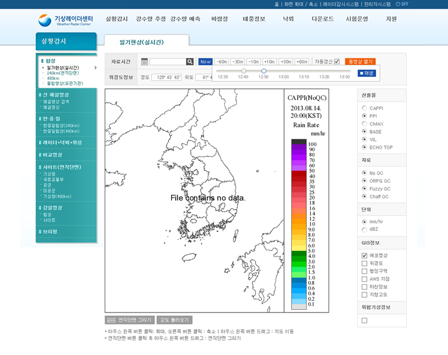
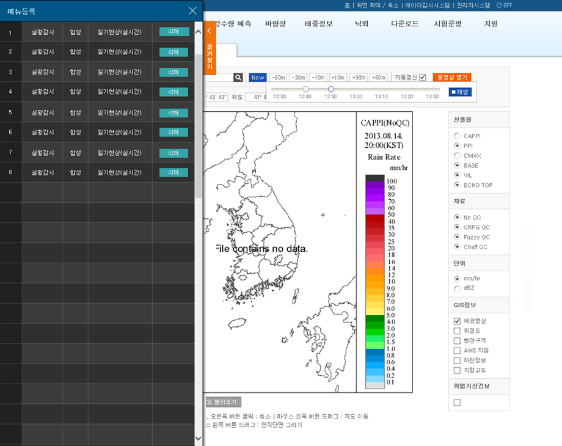
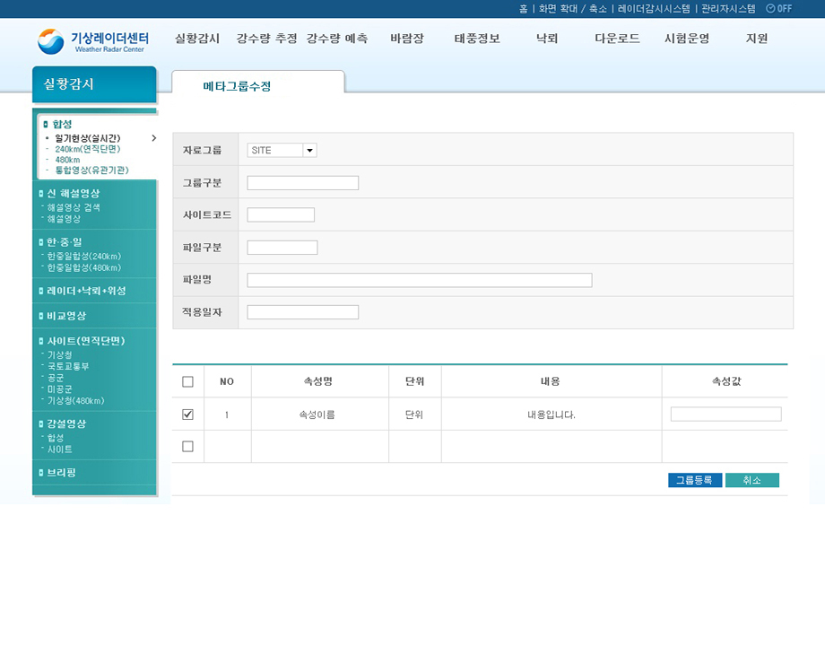
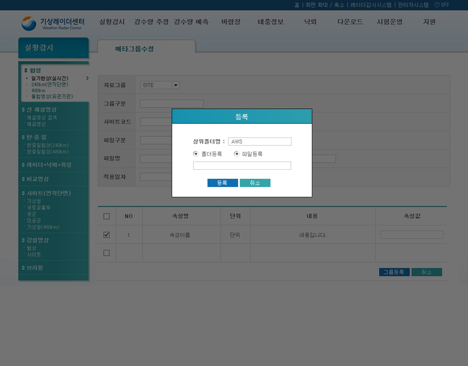
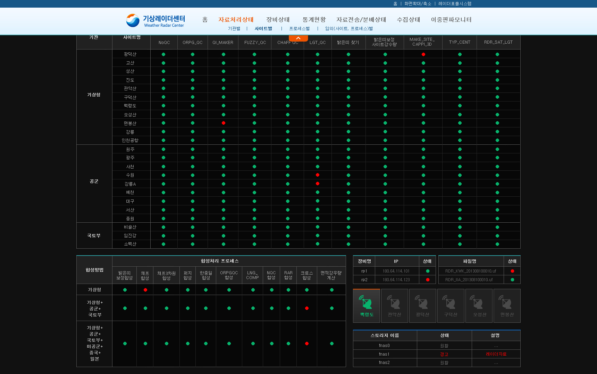
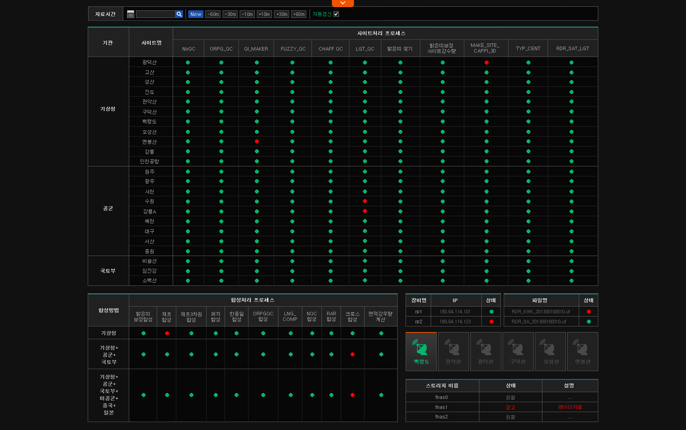

기상레이더센터 내부 인트라넷
| 작업내용 | 기상레이더센터 내부 인트라넷 |
|---|---|
| 작업기간 | 2013.10.24 - 2013.11.12 |
| 고객사 | 기상청 기상레이더센터 |
기상레이더센터 웹사이트 구축 작업의 연장으로기상레이더센터 인트라넷, 레이더감시시스템을 작업하였습니다.
파란색에 청록색계열 컬러배색을 하여 기상레이더센터와 연관성은 유지하되 충분히 구별되게 하였습니다.
메뉴가 많기 때문에 최대한 심플하게 작업하였습니다.
- 
- 
- 
- 
- 
- 
레이더감시시스템은 보통의 웹사이트와는 달리 대쉬보드의 역할을 하는 사이트로 작업되었습니다. 큰화면으로로 기상관련 현황파악을 하기 위함이 목적이기 때문에 헤더는 기상레이더센터와 통일성을 유지하면서 열고 닫을 수 있게 구성하였습니다.